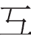

教材文本 · 论述类文本阅读
反对党八股（节选）
反对脱离实际、脱离对象的空洞表达，要求文章有内容、有针对性，并对表达效果负责。
导读
文体与题材：演讲体政论文；针对特定文风问题的批评。
作者简介：毛泽东（1893—1976），革命家、政治家、诗人。本文为1942年2月8日在延安干部会上讲话的节选。
文本出处：《毛泽东选集》第三卷，人民出版社，1991。
内容脉络：节选按若干问题逐项批评，每项结合表现、危害与改进方向展开，以具体语言实例和熟悉的生活类比推进说理。
内容主旨：反对脱离实际、脱离对象的空洞表达，要求文章有内容、有针对性，并对表达效果负责。
阅读重点：将批评对象限定为其具体表现，区分篇幅长短与内容空实。
原文
原文按结构分节；随文内容可定位至对应段落。
批评内容与态度：空话连篇和装腔作势均使表达脱离事实与读者。
党八股的第一条罪状是：空话连篇，言之无物。我们有些同志欢喜写长文章，但是没有什么内容，真是“懒婆娘的裹脚，又长又臭”。为什么一定要写得那么长，又那么空空洞洞的呢？只有一种解释，就是下决心不要群众看。因为长而且空，群众见了就摇头，哪里还肯看下去呢？只好去欺负幼稚的人，在他们中间散布坏影响，造成坏习惯。去年六月二十二日，苏联进行那么大的反侵略战争，斯大林在七月三日发表了一篇演说，还只有我们《解放日报》一篇社论那样长。要是我们的老爷写起来，那就不得了，起码得有几万字。现在是在战争的时期，我们应该研究一下文章怎样写得短些，写得精粹些。延安虽然还没有战争，但军队天天在前方打仗，后方也唤工作忙，文章太长了，有谁来看呢？有些同志在前方也喜欢写长报告。他们辛辛苦苦地写了，送来了，其目的是要我们看的。可是怎么敢看呢？长而空不好，短而空就好吗？也不好。我们应当禁绝一切空话。但是主要的和首先的任务，是把那些又长又臭的懒婆娘的裹脚，赶快扔到垃圾桶里去。或者有人要说：《资本论》不是很长的吗？那又怎么办？这是好办的，看下去就是了。俗话说：“到什么山上唱什么歌。”又说：“看菜吃饭，量体裁衣。”我们无论做什么事都要看情形办理，文章和演说也是这样。我们反对的是空话连篇言之无物的八股调，不是说任何东西都以短为好。战争时期固然需要短文章，但尤其需要有内容的文章。最不应该、最要反对的是言之无物的文章。演说也是一样，空话连篇言之无物的演说，是必须停止的。
党八股的第二条罪状是：装腔作势，借以吓人。有些党八股，不只是空话连篇，而且装样子故意吓人，这里面包含着很坏的毒素。空话连篇，言之无物，还可以说是幼稚；装腔作势，借以吓人，则不但是幼稚，简直是无赖了。鲁迅曾经批评过这种人，他说：“辱骂和恐吓决不是战斗。”科学的东西，随便什么时候都是不怕人家批评的，因为科学是真理，决不怕人家驳。主观主义和宗派主义的东西，表现在党八股式的文章和演说里面，却生怕人家驳，非常胆怯，于是就靠装样子吓人；以为这一吓，人家就会闭口，自己就可以“得胜回朝”了。这种装腔作势的东西，不能反映真理，而是妨害真理的。凡真理都不装样子吓人，它只是老老实实地说下去和做下去。从前许多同志的文章和演说里面，常常有两个名词：一个叫做“残酷斗争”，一个叫做“无情打击”。这种手段，用了对付敌人或敌对思想是完全必要的，用了对付自己的同志则是错误的。党内也常常有敌人和敌对思想混进来，如《苏联共产党（布）历史简要读本》结束语第四条所说的那样。对于这种人，毫无疑义地是应该采用残酷斗争或无情打击的手段的，因为那些坏人正在利用这种手段对付党，我们如果还对他们宽容，那就会正中坏人的奸计。但是不能用同一手段对付偶然犯错误的同志；对于这类同志，就须使用批评和自我批评的方法，这就是《苏联共产党（布）历史简要读本》结束语第五条所说的方法。从前我们那些同志之所以向这些同志也大讲其“残酷斗争”和“无情打击”，一方面是没有分析对象，一方面就是为着装腔作势，借以吓人。无论对什么人，装腔作势借以吓人的方法，都是要不得的。因为这种吓人战术，对敌人是毫无用处，对同志只有损害。这种吓人战术，是剥削阶级以及流氓无产者所惯用的手段，无产阶级不需要这类手段。无产阶级的最尖锐最有效的武器只有一个，那就是严肃的战斗的科学态度。共产党不靠吓人吃饭，而是靠马克思列宁主义的真理吃饭，靠实事求是吃饭，靠科学吃饭。至于以装腔作势来达到名誉和地位的目的，那更是卑劣的念头，不待说的了。总之，任何机关做决定，发指示，任何同志写文章，做演说，一概要靠马克思列宁主义的真理，要靠有用。只有靠了这个才能争取革命胜利，其他都是无益的。
批评对象与语言：宣传应研究受众，并向群众及其他语言资源学习。
党八股的第三条罪状是：无的放矢，不看对象。早几年，在延安城墙上，曾经看见过这样一个标语：“工人农民联合起来争取抗日胜利。”这个标语的意思并不坏，可是那工人的工字第二笔不是写的一直，而是转了两个弯子，写成了“工异体 
党八股的第四条罪状是：语言无味，像个瘪三。上海人叫小瘪三的那批角色，也很像我们的党八股，干瘪得很，样子十分难看。如果一篇文章，一个演说，颠来倒去，总是那几个名词，一套“学生腔”，没有一点生动活泼的语言，这岂不是语言无味，面目可憎，像个瘪三吗？一个人七岁入小学，十几岁入中学，二十多岁在大学毕业，没有和人民群众接触过，语言不丰富，单纯得很，那是难怪的。但我们是革命党，是为群众办事的，如果也不学群众的语言，那就办不好。现在我们有许多做宣传工作的同志，也不学语言。他们的宣传，乏味得很；他们的文章，就没有多少人欢喜看；他们的演说，也没有多少人欢喜听。为什么语言要学，并且要用很大的气力去学呢？因为语言这东西，不是随便可以学好的，非下苦功不可。第一，要向人民群众学习语言。人民的语汇是很丰富的，生动活泼的，表现实际生活的。我们很多人没有学好语言，所以我们在写文章做演说时没有几句生动活泼切实有力的话，只有死板板的几条筋，像瘪三一样，瘦得难看，不像一个健康的人。第二，要从外国语言中吸收我们所需要的成分。我们不是硬搬或滥用外国语言，是要吸收外国语言中的好东西，于我们适用的东西。因为中国原有语汇不够用，现在我们的语汇中就有很多是从外国吸收来的。例如今天开的干部大会，这“干部”两个字，就是从外国学来的。我们还要多多吸收外国的新鲜东西，不但要吸收他们的进步道理，而且要吸收他们的新鲜用语。第三，我们还要学习古人语言中有生命的东西。由于我们没有努力学习语言，古人语言中的许多还有生气的东西我们就没有充分地合理地利用。当然我们坚决反对去用已经死了的语汇和典故，这是确定了的，但是好的仍然有用的东西还是应该继承。现在中党八股毒太深的人，对于民间的、外国的、古人的语言中有用的东西，不肯下苦功去学，因此，群众就不欢迎他们枯燥无味的宣传，我们也不需要这样蹩脚的不中用的宣传家。什么是宣传家？不但教员是宣传家，新闻记者是宣传家，文艺作者是宣传家，我们的一切工作干部也都是宣传家。比如军事指挥员，他们并不对外发宣言，但是他们要和士兵讲话，要和人民接洽，这不是宣传是什么？一个人只要他对别人讲话，他就是在做宣传工作。只要他不是哑巴，他就总有几句话要讲的。所以我们的同志都非学习语言不可。
批评思维方法：文章须提出、分析和解决问题，不能罗列空洞名目。
党八股的第五条罪状是：甲乙丙丁，开中药铺。你们去看一看中药铺，那里的药柜子上有许多抽屉格子，每个格子上面贴着药名，当归、熟地、大黄、芒硝，应有尽有。这个方法，也被我们的同志学到了。写文章，做演说，著书，写报告，第一是大壹贰叁肆，第二是小一二三四，第三是甲乙丙丁，第四是子丑寅卯，还有大ABCD，小abcd，还有阿拉伯数字，多得很！幸亏古人和外国人替我们造好了这许多符号，使我们开起中药铺来毫不费力。一篇文章充满了这些符号，不提出问题，不分析问题，不解决问题，不表示赞成什么，反对什么，说来说去还是一个中药铺，没有什么真切的内容。我不是说甲乙丙丁等字不能用，而是说那种对待问题的方法不对。现在许多同志津津有味于这个开中药铺的方法，实在是一种最低级、最幼稚、最庸俗的方法。这种方法就是形式主义的方法，是按照事物的外部标志来分类，不是按照事物的内部联系来分类的。单单按照事物的外部标志，使用一大堆互相没有内部联系的概念，排列成一篇文章、一篇演说或一个报告，这种办法，他自己是在做概念的游戏，也会引导人家都做这类游戏，使人不用脑筋想问题，不去思考事物的本质，而满足于甲乙丙丁的现象罗列。什么叫问题？问题就是事物的矛盾。哪里有没有解决的矛盾，哪里就有问题。既有问题，你总得赞成一方面，反对另一方面，你就得把问题提出来。提出问题，首先就要对于问题即矛盾的两个基本方面加以大略的调查和研究，才能懂得矛盾的性质是什么，这就是发现问题的过程。大略的调查和研究可以发现问题，提出问题，但是还不能解决问题。要解决问题，还须作系统的周密的调查工作和研究工作，这就是分析的过程。提出问题也要用分析，不然，对着模糊杂乱的一大堆事物的现象，你就不能知道问题即矛盾的所在。这里所讲的分析过程，是指系统的周密的分析过程。常常问题是提出了，但还不能解决，就是因为还没有暴露事物的内部联系，就是因为还没有经过这种系统的周密的分析过程，因而问题的面貌还不明晰，还不能做综合工作，也就不能好好地解决问题。一篇文章或一篇演说，如果是重要的带指导性质的，总得要提出一个什么问题，接着加以分析，然后综合起来，指明问题的性质，给以解决的办法，这样，就不是形式主义的方法所能济事。因为这种幼稚的、低级的、庸俗的、不用脑筋的形式主义的方法，在我们党内很流行，所以必须揭破它，才能使大家学会应用马克思主义的方法去观察问题、提出问题、分析问题和解决问题，我们所办的事才能办好，我们的革命事业才能胜利。
追究责任与危害：草率写作会影响他人思想行动，党八股还会危害革命。
党八股的第六条罪状是：不负责任，到处害人。上面所说的那些，一方面是由于幼稚而来，另一方面也是由于责任心不足而来的。拿洗脸作比方，我们每天都要洗脸，许多人并且不止洗一次，洗完之后还要拿镜子照一照，要调查研究一番，（大笑）生怕有什么不妥当的地方。你们看，这是何等地有责任心呀！我们写文章，做演说，只要像洗脸这样负责，就差不多了。拿不出来的东西就不要拿出来。须知这是要去影响别人的思想和行动的啊！一个人偶然一天两天不洗脸，固然也不好，洗后脸上还留着一个两个黑点，固然也不雅观，但倒并没有什么大危险。写文章做演说就不同了，这是专为影响人的，我们的同志反而随随便便，这就叫做轻重倒置。许多人写文章，做演说，可以不要预先研究，不要预先准备；文章写好之后，也不多看几遍，像洗脸之后再照照镜子一样，就马马虎虎地发表出去。其结果，往往是“下笔千言，离题万里”，仿佛像个才子，实则到处害人。这种责任心薄弱的坏习惯，必须改正才好。
第七条罪状是：流毒全党，妨害革命。第八条罪状是：传播出去，祸国殃民。这两条意义自明，无须多说。这就是说，党八股如不改革，如果听其发展下去，其结果之严重，可以闹到很坏的地步。党八股里面藏的是主观主义、宗派主义的毒物，这个毒物传播出去，是要害党害国的。
注释 · 札记 2
演讲现场标记
（大笑）括号记录听众反应，是讲话现场留下的表述特征，应与说话者正文区别。
检核的对象
像洗脸之后再照照镜子一样生活类比使检查文章成为熟悉的动作。可进一步讨论：校对字句、核查事实和检验推理各对应哪些不同的“照镜子”工作？
研读题
以下为研读设计题，供文本细读与讨论；不作为教材原题或考试评分细则。
第1题 · 观点限定
为什么不能把第一条罪状的改进主张概括为“文章越短越好”？
参考答案1展开 / 收起
参考作答
批评首先针对空话和言之无物；战时工作繁忙使精简更为迫切，但短而空同样无效，必要的长文仍可成立。合适篇幅应由内容、对象和交际情境决定。
审题与考查点
本题考查观点限定。应说明结论由哪些词句及关系支持，而非只列术语。
文本分析
用对照排除片面标准查看证据 ↗
作者同时否定长而空与短而空，表明篇幅不是判断的充分条件。将这一对照删去，就会把内容标准误读成字数标准。
用条件说明篇幅选择查看证据 ↗
战时的阅读条件提出精简要求，《资本论》的反例又说明长文不必一概排斥。“看情形办理”把长度重新放回目的与内容之中，构成有条件的主张。
知识点
解题方法
找出主要批评、反面例子和限定句，恢复“在何种条件下、反对什么”的完整判断。
易误辨析
不能仅取“写得短些”而删去“有内容”的要求。
答案组织与检核
逐项核对：引句位置准确；每个判断有推导；相近观点不重复；结论不超出文本。
第2题 · 结构与思维
本文列举“八大罪状”，却又批评“甲乙丙丁，开中药铺”，是否自相矛盾？
参考答案2展开 / 收起
参考作答
不矛盾。作者反对的是以符号和外部现象代替问题分析，并未反对编号。本文的分项围绕共同论题，逐项联系表现、危害和改进方法，服务于揭示问题及其内部联系。
审题与考查点
本题考查结构与思维。应说明结论由哪些词句及关系支持，而非只列术语。
文本分析
区分表达标记与认识方法查看证据 ↗
作者直接说并非不能用甲乙丙丁，而是处理问题的方法不对，因而编号本身不是罪状。是否形式主义，要看概念之间是否有真实关系，不能由版式外观直接推断。
以篇内实例检验是否在分析查看证据 ↗
第三条从古体字标语追问对象，第六条从发表行为追问影响和责任，都不是只有小标题的罗列。它们共同回应不良文风如何形成和改进的问题，体现分项与总论题的从属联系。
知识点
解题方法
先找作者对所批评方法的明确定义，再用文章自身的推理段落作检验。
易误辨析
形式整齐既不能自动保证逻辑严密，也不能自动证明表达僵化；应检查内容联系。
答案组织与检核
逐项核对：引句位置准确；每个判断有推导；相近观点不重复；结论不超出文本。
评议
本篇可用于反思结构化写作本身：清楚的题头、编号和层级有助于阅读，但只有建立在概念区分、材料联系和推理步骤之上，才具有认识价值。评议应以具体段落说明其方法，而不是把反八股再简化成固定写作口令。
参考文献
- 《毛泽东选集》第三卷，人民出版社，1991。
- 教育部组织编写：《普通高中教科书·语文·必修上册》，人民教育出版社。本篇见第88—93页；原文字形与节选范围据教材校核。
本文关联
引用本文
论证结构4 处
阅读条目 →反对党八股（节选） · 第2题选析 ↗研习任务：本文列举“八大罪状”，却又批评“甲乙丙丁，开中药铺”，是否自相矛盾？
反对党八股（节选） · 第2题选析 ↗文本依据：“我不是说甲乙丙丁等字不能用”；“不是按照事物的内部联系来分类的”。
反对党八股（节选） · 第2题选析 ↗文本依据：“对于自己的宣传对象没有调查，没有研究，没有分析”；“须知这是要去影响别人的思想和行动的啊”。
反对党八股（节选） · 第2题选析 ↗查看完整解析与全部证据
概念的内涵与外延4 处
阅读条目 →反对党八股（节选） · 第2题选析 ↗研习任务：本文列举“八大罪状”，却又批评“甲乙丙丁，开中药铺”，是否自相矛盾？
反对党八股（节选） · 第2题选析 ↗文本依据：“我不是说甲乙丙丁等字不能用”；“不是按照事物的内部联系来分类的”。
反对党八股（节选） · 第2题选析 ↗文本依据：“对于自己的宣传对象没有调查，没有研究，没有分析”；“须知这是要去影响别人的思想和行动的啊”。
反对党八股（节选） · 第2题选析 ↗查看完整解析与全部证据
论点的限定条件5 处
阅读条目 →概念界定与边界 ↗例如《反对党八股》反对长而空，也反对短而空，主张是按内容和情形决定篇幅；“文章越短越好”删除了条件，便不再是作者的意思。限定语不是削弱立场，而是说明它何时、对谁、在什么方面成立。
反对党八股（节选） · 第1题选析 ↗研习任务：为什么不能把第一条罪状的改进主张概括为“文章越短越好”？
反对党八股（节选） · 第1题选析 ↗文本依据：“长而空不好，短而空就好吗？也不好”；“我们应当禁绝一切空话”。
反对党八股（节选） · 第1题选析 ↗文本依据：“现在是在战争的时期”；“我们无论做什么事都要看情形办理”；“不是说任何东西都以短为好”。
反对党八股（节选） · 第1题选析 ↗查看完整解析与全部证据